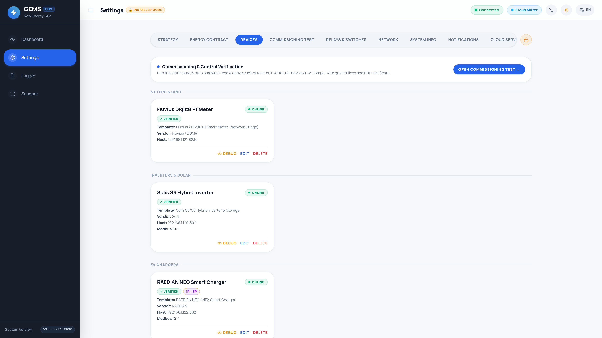

Modèles Matériels Compatibles & Guides de Configuration Étape par Étape
GEMS embarque 180 modèles matériels natifs couvrant plus de 100 fabricants majeurs d'onduleurs solaires, de systèmes de batteries résidentielles, de bornes de recharge VE, de compteurs numériques communicants, de routeurs solaires linéaires, de pompes à chaleur SG-Ready et de relais intelligents.


Procédure universelle d'intégration en 4 étapes
L'ajout et la configuration de n'importe quel appareil dans GEMS suivent un processus simple en 4 étapes, entièrement piloté depuis l'interface Web sans modifier aucun fichier de configuration :
Raccordement physique & réseau local
Connectez votre équipement via Ethernet LAN, Wi-Fi, bus RS-485 ou câble USB P1. Assurez-vous que l'appareil et GEMS partagent le même sous-réseau local. Utilisez le Scanner intégré (accessible depuis le menu latéral) pour détecter immédiatement l'adresse IP et le fabricant MAC OUI.
Préparation de l'application constructeur / matériel
Sur l'appareil ou dans l'application mobile du fabricant, activez le protocole de communication : activez Modbus TCP (par ex. dans Huawei FusionSolar, SMA Speedwire ou SolarEdge SetApp), pointez l'URL du serveur OCPP de votre borne vers GEMS, ou activez l'API locale sur HomeWizard ou Shelly.
Ajout de l'appareil dans l'interface GEMS
Dans GEMS, accédez à Paramètres → Appareils → + Ajouter un appareil énergétique. Choisissez la catégorie (Onduleurs & Solaire, Bornes VE, Réseau & Compteurs ou Relais intelligents), sélectionnez votre modèle matériel, saisissez l'IP/port ou le ChargeBox ID, puis cliquez sur Enregistrer.
Vérification de la communication en temps réel
Le moteur d'acquisition interroge immédiatement votre équipement. Vérifiez que la carte affiche le badge vert ● En ligne. Rendez-vous sur le Tableau de bord pour observer les flux énergétiques animés et contrôlez les registres dans le Journal.
1. Onduleurs Solaires & Hybrides (24 Modèles)
Les modèles d'onduleurs communiquent directement en Modbus TCP (Ethernet / clé Wi-Fi), RS-485, SunSpec ou API HTTP locales. Ils mesurent en temps réel la production solaire (PV), l'état de charge batterie (SOC %), la puissance de charge/décharge et prennent en charge le bridage actif (écrêtement).

| Marque / Modèle | Protocole | Port par défaut | Slave ID par défaut | Gestion Batterie | Écrêtement |
|---|---|---|---|---|---|
| Huawei SUN2000 (L1/M1/M2/M3/MB0) | Modbus TCP (SDongleA/SmartLogger) | 502 |
1 (ou 2) |
Oui (LUNA2000) | Oui |
| SMA Sunny Boy / Tripower / Storage | Modbus TCP (Speedwire / SunSpec) | 502 |
126 (ou 3) |
Oui (BYD/LG) | Oui |
| Solis Hybrid (S5 / S6 Mono & Triphasé) Référence Principale | Modbus TCP | 502 (ou 8899) |
1 |
Oui | Oui |
| Solis Retrofit (RAI / S6-EA Stockage AC) Référence Principale | Modbus TCP | 502 (ou 8899) |
1 |
Oui (Easyway 5200 / 48V BT) | Oui |
| Fronius Gen24 / Symo / Primo | Modbus TCP (SunSpec) | 502 |
1 |
Oui (BYD HVS/HVM) | Oui |
| GoodWe Hybrid (ET / EH / ES / EM) | Modbus TCP / UDP | 502 (ou 8899) |
247 |
Oui | Oui |
| Growatt (SPH / MIN / MOD / MID) | Modbus TCP (ShineLAN-X) | 502 |
1 |
Oui | Oui |
| SolarEdge Triphasé & Monophasé | Modbus TCP (SunSpec SetApp) | 1502 (ou 502) |
1 |
Oui (Energy Bank) | Oui |
| SolaX Hybrid (X1 / X3 Gen 2/3/4) | Modbus TCP (Pocket LAN/Wi-Fi) | 502 |
1 |
Oui (Triple Power) | Oui |
| SofarSolar (HYD / G3 / AMASS) | Modbus TCP | 8899 (ou 502) |
1 |
Oui | Oui |
| Sungrow Hybrid (SH5.0 - SH10RT) | Modbus TCP | 502 |
1 |
Oui (SBR096-256) | Oui |
| Victron GX / MultiPlus-II | Modbus TCP (Venus OS) | 502 |
100 (GX) / 228 |
Oui (Victron ESS) | Oui |
| Deye / Sunsynk Hybrid | Modbus TCP (Clé LAN/Wi-Fi) | 502 (ou 8899) |
1 |
Oui | Oui |
| FoxESS Hybrid (H1 / H3 / H3-Pro) | Modbus TCP | 502 |
1 (ou 247) |
Oui (ECS/Mira) | Oui |
| SAJ eSolar (H1 / H2 / R5 / R6) | Modbus TCP | 502 |
1 |
Oui (B1/B2) | Oui |
| Senergy Hybrid (SE Series) | Modbus TCP | 502 |
1 |
Oui | Oui |
| Sigenergy SigenStor (5-en-1 ESS) | Modbus TCP | 502 |
1 |
Oui (Sigen Battery) | Oui |
| Enerlution Hybrid ESS | Modbus TCP | 502 |
1 |
Oui | Oui |
| Alpha ESS Storion (SMILE5/T10) | Modbus TCP | 502 (ou 8502) |
85 |
Oui | Oui |
| Anker SOLIX X1 Hybrid | Modbus TCP | 502 |
1 |
Oui | Oui |
| Afore Hybrid (AF-T / AF-S) | Modbus TCP | 502 |
1 |
Oui | Oui |
| Marstek Storage (Venus / Jupiter) | Modbus TCP | 502 |
1 |
Oui | Oui |
| LG ESS Home (8 / 10 / 15) | HTTP REST local | 80 / 443 |
— | Oui | Oui |
| Enphase IQ Gateway / Envoy | HTTPS REST local (Auto-JWT) | 443 / 80 |
— | Oui (IQ Battery) | Lecture seule |
Guides de configuration étape par étape pour les onduleurs les plus répandus
Onduleurs Solis S5 / S6 Hybrides & Retrofit (Plateforme de Référence)
Modèle : solis_hybrid / solis_retrofit- Connexion physique / LAN : Raccordez le port RS-485 COM Solis directement à un adaptateur USB vers RS-485 sur l'unité GEMS (recommandé pour une réponse inférieure à la seconde) ou branchez une clé Ethernet Solis S2-WL-ST avec Modbus TCP local activé sur le port
502(ou8899), Slave ID1. - Autoriser le pilotage externe du stockage : Dans l'écran Solis ou le menu Bluetooth local SolisCloud, vérifiez l'adresse esclave
1(9600 8N1en RS-485) et autorisez le pilotage EMS externe. - Ajout dans GEMS : Rendez-vous dans Paramètres → Appareils → + Ajouter un appareil énergétique.
- Catégorie : Onduleurs & Solaire
- Modèle : Solis S5/S6 Hybrid Inverter & Storage (ou Solis Retrofit pour un stockage couplé AC)
- Nom de l'appareil :
Solis S6 Hybrid Inverter - Adresse : Saisissez l'IP LAN (par ex.
192.168.1.120:502) ou choisissez le chemin persistant/dev/serial/by-id/*| Modbus ID :1 - Puissance nominale & Capacité batterie : Renseignez la puissance AC (par ex.
10.0 kW), cochez Battery Connected? et saisissez la capacité batterie utile (kWh).
- Vérification : Cliquez sur Enregistrer. Le statut passe à ● En ligne avec lecture en direct de la production PV, du SoC batterie %, des limites dynamiques BMS et du contrôle d'écrêtement actif.
Onduleurs Hybrides Huawei SUN2000 (avec batterie LUNA2000)
Modèle : huawei_inverter- Activer Modbus TCP sur le SDongleA : Ouvrez l'application Huawei FusionSolar en tant qu'Installateur. Accédez à Device Management → Dongle → Set Parameters → Modbus TCP. Sélectionnez Enable (Unrestricted) et vérifiez l'ouverture du port
502. - Connexion réseau : Raccordez le SDongleA à votre routeur par câble Ethernet ou Wi-Fi. Identifiez son adresse IP (par ex.
192.168.1.105) depuis l'onglet Scanner de GEMS. - Ajout dans GEMS : Dans GEMS, cliquez sur Paramètres → Appareils → + Ajouter un appareil énergétique.
- Catégorie : Onduleurs & Solaire
- Modèle : Huawei Hybrid Inverter
- Nom de l'appareil :
Huawei SUN2000 - IP Hôte :
192.168.1.105| Port :502| Modbus ID :1(ou2en cascade) - Puissance nominale (kW) : Indiquez la puissance AC de votre onduleur (par ex.
6.0) - Allow Curtailment : Cochez la case pour le zéro-export ou l'écrêtement lors des prix négatifs
- Vérification : Cliquez sur Enregistrer. En moins de 5 secondes, le statut passe au vert ● En ligne. La production PV, le SOC % et la puissance de charge/décharge apparaissent sur le Tableau de bord.
Onduleurs Hybrides Enerlution & Batteries LiFePO4 (BT & HT)
Modèle : enerlution_inverter- Câblage Batterie & Compteur intelligent : Raccordez les packs Basse Tension 51,2 V (
LFPWall-5000,LFPWall-10K-V2,Roller-16K) en parallèle sur les onduleurs monophasésHY / L3–L6, ou empilez les briques Haute Tension (GroundHV-2500,GH02-5324+ PDU/BCU) sur les onduleurs triphasésHYTH. Reliez le portCANMaître/PDU (Broche 4CAN-H, Broche 5CAN-L) au portBMSde l'onduleur et raccordez le compteurCHINT DTSU666(bornes 24/25) ouEastron SDM630sur l'Adresse1. - Mise en service App Enerlution : Sélectionnez
Lithium-Ion (CAN), réglezEMS Mode = Self-Consumption, définissezMinimum SOC = 10%et laissezActive Power / Export Control = Disabled / Unlimitedafin que GEMS puisse brider dynamiquement au Watt près (1 W). - Ajout dans GEMS : Détectez automatiquement via le Scanner (OUI MAC IEEE
70:B3:D5/E4:5F:01) ou choisissez Onduleurs & Solaire → Enerlution Hybrid Inverter sur le Port502(ou USB-RS4859600 8N1), Slave ID1, saisissez la puissance AC exacte en kW, cochez Allow Curtailment et indiquez la capacité batterie (kWh).
SMA Sunny Boy / Sunny Tripower / Sunny Island
Modèle : sma_inverter- Activer Modbus & SunSpec : Ouvrez l'interface Web SMA dans votre navigateur avec le mot de passe installateur. Accédez à Paramètres de l'appareil → Communication externe → Modbus → Serveur TCP. Activez le Serveur TCP et vérifiez le Port 502. Réglez l'Unit ID sur
126(par défaut) ou3. - Ajout dans GEMS : Dans GEMS, allez dans Paramètres → Appareils → + Ajouter un appareil énergétique.
- Catégorie : Onduleurs & Solaire
- Modèle : SMA Sunny Boy / Tripower
- Hôte : IP de l'onduleur SMA (par ex.
192.168.1.110) | Port :502| Modbus ID :126 - Puissance nominale (kW) : par ex.
8.0
- Vérification : Le statut passe à ● En ligne. La production active et la télémétrie batterie sont transmises en direct au Tableau de bord.
Onduleurs SolarEdge (Monophasés & Triphasés avec SetApp)
Modèle : solaredge_inverter / solaredge_3phase- Activer SunSpec dans SetApp : Ouvrez l'application mobile SolarEdge SetApp, connectez-vous au point d'accès Wi-Fi de l'onduleur et accédez à Communication → Modbus TCP. Activez l'option et réglez le port sur
1502(port SolarEdge standard) ou502. Vérifiez que le Device ID vaut1. - Ajout dans GEMS : Choisissez le modèle SolarEdge Inverter (monophasé) ou SolarEdge 3-Phase Inverter. Saisissez l'IP hôte, le Port
1502et le Modbus ID1. - Vérification : Les mesures SunSpec remontent instantanément vers GEMS.
Victron GX (Cerbo GX / MultiPlus-II / Venus OS)
Modèle : victron_inverter- Activer Modbus TCP sous Venus OS : Accédez à la console distante Victron (navigateur ou écran Touch 50/70). Allez dans Paramètres → Services → Modbus TCP et basculez sur ON.
- Ajout dans GEMS : Modèle Victron Inverter/GX. Saisissez l'IP hôte, le Port
502et le Modbus ID100(vue globale système) ou228(onduleur réseau).
Onduleur Hybride Sungrow (SH5.0 - SH10RT)
Modèle : sungrow_inverter- Raccordement direct au port LAN interne : Pour une interrogation Modbus TCP rapide et fiable, branchez votre câble Ethernet directement sur le port RJ45 LAN interne de l'onduleur (sous le capot inférieur) plutôt que sur le dongle externe WiNet-S.
- Ajout dans GEMS : Sélectionnez Sungrow Inverter. Renseignez l'IP hôte, le Port
502et le Modbus ID1.
Enphase IQ Gateway / Envoy-S (Micrologiciel D5, D7 & D8)
Modèle : enphase_envoy (Lecture seule)- Télémétrie 100 % locale sur LAN (aucune API Cloud développeur requise) : GEMS interroge directement la passerelle Enphase IQ Gateway sur votre réseau local en HTTPS (Port
443en Firmware D7/D8 ; Port80sur Envoy-S D5) pour lire en direct la production des micro-onduleurs, le bilan réseau par tores CT, les tensions/courants triphasés ainsi que la puissance et le SoC des batteries IQ Battery 3T/10T/5P. - Récupération automatique du jeton JWT local & renouvellement annuel (Firmware D7 / D8) : Saisissez l'adresse e-mail et le mot de passe du compte Enphase App (Enlighten) du propriétaire dans le formulaire. GEMS lit automatiquement le numéro de série via
/info.xmlen local, récupère un jeton JWT signé valable 1 an, le conserve localement même hors connexion Internet et le renouvelle automatiquement avant expiration (le collage manuel d'un jeton JWT est également possible). - Ajout dans GEMS : Sélectionnez Onduleurs & Solaire → Enphase IQ Gateway / Envoy, renseignez l'IP LAN de la passerelle, le Port
443, l'e-mail & mot de passe Enphase, et cochez Grid Meter Connected? / Battery Connected? si des tores CT de consommation ou des batteries IQ sont installés.
2. Bornes de Recharge VE & Wallbox (38 Modèles)
GEMS pilote les bornes de recharge VE via bus de terrain direct Modbus TCP/RTU (méthode privilégiée), le serveur WebSocket embarqué OCPP 1.6-J Natif Universel et des API REST locales. Les bornes bénéficient du mode Éco automatique (charge au surplus solaire), de l'écrêtage capacitaire flamand, de la protection du disjoncteur principal par phase et de la commutation 1P / 3P sur le matériel compatible.

Modbus TCP est le mode de connexion privilégié pour les bornes VE en raison d'avantages techniques majeurs :
- Régulation temps réel inférieure à la seconde : Les écritures directes de registres Modbus permettent un ajustement instantané de l'intensité (de 6 A à 32 A), indispensable pour l'écrêtage de pointe quart-horaire et le suivi rapide du solaire.
- Coexistence transparente avec les plateformes CPO / remboursement employeur : Si votre borne est reliée en OCPP à une carte carburant employeur, un service de remboursement (split-billing) ou un opérateur de recharge externe, GEMS pilote la puissance localement en Modbus TCP sans jamais perturber ni couper votre connexion de facturation cloud.
- Fiabilité 100 % locale : Communication déterministe et légère sur le port TCP standard 502 sans aucune dépendance au cloud.
Comment configurer : Activez Modbus TCP dans l'interface web ou l'application installateur de la borne. Dans GEMS, cliquez sur Ajouter un appareil → Borne VE, sélectionnez votre modèle de marque (par ex. Alfen Eve, Keba KeContact P30, Mennekes Amtron, Webasto Live/Next, ABB Terra AC, Raedian Gemini/Neo, Phoenix Contact Charx, Veton, SolarEdge Home EVSE ou Generic Modbus TCP Charger), puis saisissez l'adresse IP locale de la borne, le Port 502 et le Slave ID Modbus (généralement 1).
ws://<GEMS-IP>:8887/<ChargePointID> ou ws://<GEMS-IP>:8080/api/ocpp/<ChargePointID>
192.168.1.188 et l'identifiant de votre borne EVB-P201948, réglez l'URL sur ws://192.168.1.188:8887/EVB-P201948 (ou ws://192.168.1.188:8080/api/ocpp/EVB-P201948). Sélectionnez le modèle OCPP 1.6-J Smart EV Charger dans GEMS et renseignez le même identifiant.
| Marque / Modèle | Type | Méthode de connexion | Port / URL par défaut | Modulation dynamique du courant |
|---|---|---|---|---|
| RAEDIAN NEO / NEX / Gemini | Modbus TCP | LAN / Wi-Fi direct | Port 502, ID 1 (ou 2) |
Oui (6A - 32A) |
| Huawei FusionCharge (SCharger-7KS/22KT) | OCPP 1.6-J | WebSocket natif | ws://<EMS-IP>:8887/<ID> |
Oui |
| EVBox Elvi / Livo / BusinessLine | OCPP 1.6-J | WebSocket natif | ws://<EMS-IP>:8887/<ID> |
Oui |
| Mennekes AMTRON (4You/4Business/ACU) | OCPP 1.6-J | WebSocket natif | ws://<EMS-IP>:8887/<ID> |
Oui |
| Mennekes AMTRON (Xtra / Premium / HCC3) | Modbus TCP | LAN direct | Port 502, ID 1 |
Oui |
| go-e Charger Gemini / HOMEfix / PRO | REST local | HTTP API v2 | Port 80 (IP locale) |
Oui |
| SMA EV Charger (7.4 / 22 / eCharger) | OCPP 1.6-J | WebSocket natif | ws://<EMS-IP>:8887/<ID> |
Oui |
| Schneider Electric EVlink (Wallbox/Pro AC) | OCPP 1.6-J | WebSocket natif | ws://<EMS-IP>:8887/<ID> |
Oui |
| Siemens VersiCharge GEN3 | OCPP 1.6-J | WebSocket natif | ws://<EMS-IP>:8887/<ID> |
Oui |
| Elli / VW / Skoda / SEAT (ID. Charger) | OCPP 1.6-J | Configuration Manager | ws://<EMS-IP>:8887/<ID> |
Oui |
| KEBA KeContact P30 / P40 | Modbus TCP / UDP | LAN direct | Port 502, ID 255 |
Oui |
| ABB Terra AC Wallbox | OCPP 1.6-J | App TerraConfig | ws://<EMS-IP>:8887/<ID> |
Oui |
| Alpitronic Hypercharger (HYC) | OCPP 1.6-J | LAN direct | ws://<EMS-IP>:8887/<ID> |
Oui |
| Autel MaxiCharger AC | OCPP 1.6-J | App Autel Charge | ws://<EMS-IP>:8887/<ID> |
Oui |
| Peblar EV Charger (Home / Business / Plus) | Modbus TCP | LAN direct | Port 502, ID 1 |
Oui |
| Phoenix Contact EV-CC / CHARX | Modbus TCP | LAN direct | Port 502, ID 1 |
Oui |
| Veton / Phoenix CharX | Modbus TCP | LAN direct | Port 502, ID 1 |
Oui |
| Webasto Next / Live | Modbus TCP | LAN / Wi-Fi direct | Port 502, ID 1 |
Oui |
| SmartEVSE v2 / v3 | REST local / Modbus | HTTP API (/add) |
Port 80 |
Oui |
| Wallbox Pulsar Plus / Commander | REST Cloud | Wallbox Cloud API | Identifiants Cloud | Oui |
| Zaptec Go / Pro | REST Cloud | Zaptec Cloud API | Identifiants Cloud | Oui |
| Easee Home / Charge | REST Cloud | Easee Cloud API | Identifiants Cloud | Oui |
Guides étape par étape pour les bornes VE
Wallbox AC RAEDIAN NEO / NEX / Gemini (Modbus TCP)
Modèle : raedian_charger / raedian_gemini- Connexion réseau : Connectez votre borne RAEDIAN à votre réseau Wi-Fi ou Ethernet domestique. Relevez son adresse IP locale dans l'application RAEDIAN (par ex.
192.168.1.120). Le port Modbus TCP502est actif par défaut. - Ajout dans GEMS : Dans GEMS, accédez à Paramètres → Appareils → + Ajouter un appareil énergétique.
- Catégorie : Bornes VE
- Modèle : Choisissez RAEDIAN NEO / NEX AC Wallbox (simple prise) ou RAEDIAN Gemini AC Wallbox (double prise).
- Nom de l'appareil :
RAEDIAN Wallbox - IP Hôte :
192.168.1.120| Port :502| Modbus ID :1 - Mode de charge : Choisissez Eco (Priorité Solaire) ou Fast.
- Vérification : Cliquez sur Enregistrer. Le statut passe à ● En ligne. Dès qu'un véhicule est branché, GEMS surveille la puissance réelle et module automatiquement les consignes d'intensité (6 A–32 A sur NEO/NEX, 0 A–64 A sur Gemini) selon le surplus solaire et vos limites capacitaires.
Borne OCPP 1.6-J Universelle (Huawei FusionCharge, EVBox, Mennekes, SMA, Siemens)
Modèle : ocpp / huawei_scharger / evbox_charger / mennekes_ocpp- Identifier le ChargePoint ID : Relevez l'identifiant ChargePoint unique de votre borne (numéro de série ou chaîne personnalisée telle que
WALLBOX-01). - Configurer l'URL CSMS dans la borne : Dans l'application installateur ou l'interface web de la borne, définissez l'URL du système central sur :
(Remplacez
ws://192.168.1.188:8887/WALLBOX-01192.168.1.188par l'IP de votre GEMS etWALLBOX-01par votre ChargePoint ID). - Ajout dans GEMS : Dans GEMS, allez dans Paramètres → Appareils → + Ajouter un appareil énergétique → Bornes VE → Sélectionnez le modèle de votre marque (par ex. EVBox Elvi ou Huawei FusionCharge) et saisissez votre ChargePoint ID.
- Vérification : GEMS valide la connexion WebSocket, reçoit les trames heartbeat et affiche les mesures de charge en direct.
go-e Charger Gemini / HOMEfix / PRO (HTTP REST local)
Modèle : goe_charger- Activer l'API HTTP locale v2 : Ouvrez l'application mobile go-e Charger → Settings → Connectivity → Advanced → Local HTTP API v2. Basculez sur Activé.
- Ajout dans GEMS : Sélectionnez go-e Charger Gemini. Renseignez l'adresse IP locale (par ex.
192.168.1.125) et le port80. - Vérification : Les courants triphasés, la puissance et les états d'autorisation remontent instantanément.
3. Réseau & Compteurs Intelligents (26 Modèles)
Les compteurs réseau fournissent en temps réel le prélèvement et l'injection du foyer, les courants par phase (L1, L2, L3), les tensions et les registres de pointe tarifaire. Une mesure rapide à la seconde est essentielle pour la réactivité de l'écrêtage de pointe et du zéro-export.

| Marque / Modèle | Type d'interface | Port / Connexion | Débit / Slave ID | Mode de phases |
|---|---|---|---|---|
| Compteur P1 (USB / Série) | Série DSMR (Détection auto) | /dev/serial/by-id/* (ou /dev/ttyUSB0) |
115200 (DSMR 5/4) / 9600 (DSMR 2/3) |
Monophasé / Triphasé |
| Compteur P1 (Réseau / Pont TCP) | Pont TCP Réseau | IP:Port (par ex. 23, 8088, 8234) |
Flux brut de télégrammes DSMR | Monophasé / Triphasé |
| HomeWizard Wi-Fi P1 Meter | HTTP REST local | Port 80 (/api/v1/data) |
API REST locale | Monophasé / Triphasé |
| Homey Energy Dongle (P1) | Diffusion réseau locale | Port 80 / Broadcast |
UDP / HTTP | Monophasé / Triphasé |
| Shelly 3EM (Gen 1 Triphasé) | HTTP REST local | Port 80 (/status) |
API REST locale | Tores CT Triphasés |
| Shelly Pro 3EM / Gen3 3EM-63T | REST Gen 2/3 local | Port 80 (/rpc/EM.GetStatus) |
API REST locale | Tores CT Triphasés |
| Eastron SDM120 / SDM220 / SDM230 | Passerelle Modbus TCP / RTU | Port 502 |
Slave ID 1 (Baud 9600) |
Monophasé Direct |
| Eastron SDM630 / SDM72D / SMART X96 | Passerelle Modbus TCP / RTU | Port 502 |
Slave ID 1 (Baud 9600) |
Triphasé Direct / CT |
| Carlo Gavazzi EM112 / EM340 / EM540 | Modbus TCP / RS485 | Port 502 |
Slave ID 1 (Baud 9600) |
Monophasé / Triphasé |
| ABB A43 / A44 / B23 / B24 Meter | Modbus TCP / RS485 | Port 502 |
Slave ID 1 |
Triphasé Direct / CT |
| Schneider Electric Acti9 iEM3000 / PM3200 | Modbus TCP / RS485 | Port 502 |
Slave ID 1 |
Triphasé Direct / CT |
| Siemens SENTRON PAC2200 / 7KT1665 | Modbus TCP | Port 502 |
Slave ID 1 |
Triphasé Direct |
| SMA Energy Meter 2.0 / Data Manager M | Modbus TCP | Port 502 |
Slave ID 2 |
Triphasé Direct |
| Socomec COUNTIS E24/E34/E44 / DIRIS A-40 | Modbus TCP / RS485 | Port 502 |
Slave ID 1 |
Triphasé Direct / CT |
| WAGO 879 Series (879-3000 / 3020 / 3040) | Modbus TCP | Port 502 |
Slave ID 1 |
Triphasé Direct |
| Eltako DSZ15DZMOD / DSZ16 Meter | Modbus TCP / RS485 | Port 502 |
Slave ID 1 |
Triphasé Direct |
| Finder 7M.24 / 7M.38 Meter | Modbus TCP / RS485 | Port 502 |
Slave ID 1 |
Triphasé Direct |
| Inepro PRO380-MOD / PRO1-MOD | Modbus TCP / RS485 | Port 502 |
Slave ID 1 |
Monophasé / Triphasé |
| Lovato DMG610 3-Phase Meter | Modbus TCP / RS485 | Port 502 |
Slave ID 1 |
Triphasé Direct / CT |
| Acrel ADW300 3-Phase Meter | Modbus TCP / RS485 | Port 502 |
Slave ID 1 |
Triphasé Sans fil/LAN |
| ESPHome DSMR / DLMS Smart Meter | HTTP REST local | Port 80 |
Télémétrie JSON | Monophasé / Triphasé |
| Loxone Miniserver | HTTP JSON local | Port 80 / 443 |
API Miniserver | Sous-comptage multi-zones |
| Niko Home Control (NHC II) | Hobby API locale | Port 8884 / 80 |
Télémétrie JSON NHC | Module Énergie |
Guides étape par étape pour les compteurs intelligents
Compteur Communicant P1 (Câble USB / Série pour Fluvius, ORES, RESA & DSMR)
Modèle : p1_serial- Raccordement matériel : Branchez la fiche RJ12 de votre câble P1 sur le port P1 du compteur communicant (Fluvius, ORES, RESA, Sibelga en Belgique ; Enexis/Liander aux Pays-Bas). Branchez la prise USB sur n'importe quel port USB de votre Raspberry Pi.
Utilisateurs en Belgique : Assurez-vous que le port client P1 a bien été activé via votre portail gestionnaire de réseau (Mijn Fluvius, ORES, RESA ou Sibelga) !
- Ajout dans GEMS : Dans GEMS, cliquez sur Paramètres → Appareils → + Ajouter un appareil énergétique.
- Catégorie : Réseau & Compteurs Intelligents
- Modèle : P1 Smart Meter (USB/Serial)
- Port série : Sélectionnez le port persistant ou
/dev/ttyUSB0(détecté automatiquement par GEMS) - Débit (Baud Rate) :
115200(standard DSMR 4.x & 5.x / e-MUCS) ou9600(anciens DSMR 2.x/3.x) - Intervalle d'interrogation :
2secondes
- Vérification : Le statut passe au vert ● En ligne. Les puissances d'import/export, les tensions par phase et les index kWh totaux apparaissent sur le nœud Réseau du Tableau de bord.
HomeWizard Wi-Fi P1 Meter & Energy Socket
Modèle : homewizard_meter- Activer l'API locale dans l'application HomeWizard : Dans l'application mobile HomeWizard Energy, accédez à Paramètres → Compteurs → Votre Compteur P1 → API locale et basculez sur ACTIVÉ.
- Ajout dans GEMS : Sélectionnez le modèle HomeWizard Meter. Renseignez l'IP locale du HomeWizard (par ex.
192.168.1.130) et le Port80. - Vérification : GEMS interroge
/api/v1/datatoutes les 2 secondes sans aucune latence cloud.
Shelly Pro 3EM / Gen3 3EM-63T (Sous-compteur triphasé)
Modèle : shelly_pro_3em- Installation physique : Clipsez les tores CT sur les phases A, B et C dans le bon sens du courant (K → L). Raccordez le module en Ethernet ou Wi-Fi.
- Ajout dans GEMS : Sélectionnez le modèle Shelly Pro 3EM / Gen3 3EM-63T. Indiquez l'adresse IP (par ex.
192.168.1.140) et le port80. - Vérification : La puissance active sur les 3 phases est lue instantanément via l'API RPC Gen 2/3.
4. Relais Intelligents & Actionneurs (2 Modèles)
Les relais intelligents pilotent dynamiquement les charges thermiques (pompes à chaleur via contacts SG-Ready, ballons d'eau chaude sanitaire, résistances électriques et pompes de piscine) en fonction du surplus solaire et des seuils de prix spot EPEX.
| Marque / Modèle | Protocole | Port | Points d'accès | Mesure de puissance |
|---|---|---|---|---|
| Shelly Plus 1PM / Pro 1PM / Plug S | REST Gen 2 local | 80 |
/rpc/Switch.Set, /rpc/Switch.GetStatus |
Oui (Watts en direct & kWh total) |
| Generic HTTP Relay (ESP / Tasmota / Personnalisé) | REST JSON | 80 / 8080 |
URL d'état & de commutation configurables | Optionnel |
Shelly Plus 1PM / Pro 1PM (Contacteur Pompe à Chaleur SG-Ready)
Modèle : shelly_plus_1pm- Câblage de l'entrée SG-Ready : Raccordez un contact sec libre de potentiel (relais auxiliaire piloté par un Shelly Plus/Pro 1PM) aux bornes SG-Ready de la pompe à chaleur (État de fonctionnement 3 : mode Boost).
- Ajout dans GEMS : Rendez-vous dans Paramètres → Relais & Commutateurs (ou Appareils → + Ajouter un appareil énergétique) → Shelly Plus 1PM / Pro 1PM. Saisissez l'IP hôte (par ex.
192.168.1.150) et le port80. - Configurer les seuils d'automatisation : Dans Règles d'automatisation des relais, définissez le seuil de surplus solaire d'enclenchement (par ex.
1500W) et l'hystérésis thermique (par ex.15 minutes) pour éviter les cycles courts. - Vérification : Le relais bascule automatiquement lorsque l'injection solaire dépasse 1500 W pendant 2 minutes, préchauffant votre ballon d'eau chaude avec 100 % d'énergie verte gratuite !
5. Vérification d'État en Direct & Journal de Diagnostic
GEMS fournit des diagnostics en temps réel à chaque cycle de communication :

| Indicateur d'état | Signification | Action recommandée |
|---|---|---|
| ● En ligne | L'équipement répond normalement dans le délai imparti (< 1000 ms). | Aucune action requise. Le système fonctionne de façon nominale. |
| ● Erreur | Délais d'attente consécutifs dépassés ou connexion refusée (TCP reset). | Vérifiez l'adresse IP, le câble réseau ou le signal Wi-Fi et l'ID Modbus. Consultez l'onglet Journal pour voir le code d'erreur brut. |
| ● Hors ligne | Appareil désactivé ou initialisation en cours. | Vérifiez l'alimentation électrique du matériel et l'accessibilité du routeur local. |